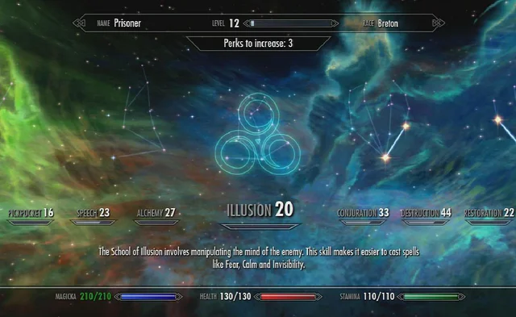
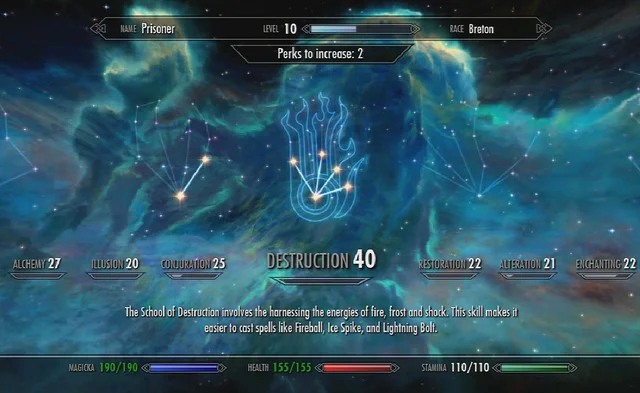

Em Skyrim, as habilidades desempenham um papel fundamental no desenvolvimento do personagem e na forma como ele interage com o mundo. Existem um total de 18 habilidades que representam várias áreas de especialização. À medida que o jogador usa uma habilidade específica, ela aumenta de nível, proporcionando benefícios e desbloqueando novas capacidades. Cada habilidade em Skyrim oferece oportunidades únicas de jogabilidade, permitindo que os jogadores personalizem seus personagens de acordo com seu estilo preferido. Ao dominar diferentes habilidades, os jogadores podem se tornar verdadeiros especialistas em várias áreas de combate, magia e exploração.
| HABILIDADE | TIPO | INFORMAÇÕES | IMAGEM |
|---|---|---|---|
| One-Handed (Uso de arma de uma mão) | Guerreiro | Representa a proficiência em combate com armas de uma mão, como espadas, machados e adagas. | |
| Two-Handed (Uso de arma de duas mãos) | Guerreiro | Está relacionada ao uso de armas de duas mãos, como grandes espadas, machados de batalha e martelos. | |
| Archery (Arquearia) | Guerreiro | Envolve o uso de arcos e flechas para ataques à distância. | |
| Block (Bloqueio) | Guerreiro | Refere-se à habilidade de bloquear ataques com um escudo ou arma, reduzindo o dano recebido. | |
| Smithing (Metalurgia) | Guerreiro | Permite a criação e aprimoramento de armas, armaduras e outros itens de metal. | |
| Heavy Armor (Armadura Pesada) | Guerreiro | Está relacionada à habilidade de usar e se mover eficientemente com armaduras pesadas. | |
| Light Armor (Armadura Leve) | Ladrão | Envolve a habilidade de usar e se mover com agilidade usando armaduras leves. | |
| Sneak (Furtividade) | Ladrão | Refere-se à capacidade de se mover silenciosamente, evitar detecção e executar ataques sorrateiros. | |
| Pickpocket (Bolsa de Valores) | Ladrão | Está associada à habilidade de roubar itens das bolsas das pessoas sem ser notado. | |
| Lockpicking (Abertura de Fechaduras) | Ladrão | Envolve a capacidade de abrir fechaduras com fechaduras de habilidade variada. | |
| Speech (Oratória) | Ladrão | Refere-se à habilidade de persuadir, intimidar e negociar com NPCs (personagens não jogáveis). | |
| Alchemy (Alquimia) | Mago | Está relacionada à habilidade de criar poções e venenos através da combinação de ingredientes. | |
| Illusion (Ilusão) | Mago | Envolve a capacidade de manipular a mente das pessoas através de magia ilusória, como encantar e acalmar. |  |
| Conjuration (Conjuração) | Mago | Permite convocar criaturas e invocar armas através da magia da conjuração. | |
| Destruction (Destruição) | Mago | Está relacionada à habilidade de lançar feitiços de destruição, como bolas de fogo e raios. |  |
| Restoration (Restauração) | Mago | Envolve a capacidade de usar magia de cura para restaurar a saúde e fortalecer aliados. |  |
| Alteration (Alteração) | Mago | Refere-se à habilidade de manipular a realidade, proporcionando buffs defensivos e utilidades mágicas. | |
| Enchanting (Encantamento) | Mago | Permite a criação e aplicação de encantamentos em armas, armaduras e itens para conferir habilidades especiais. |